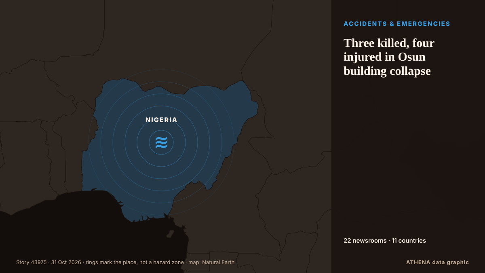

Unglücke und Notfälle
| 18. Okt. | 0 |
|---|---|
| 19. Okt. | 0 |
| 20. Okt. | 0 |
| 21. Okt. | 0 |
| 22. Okt. | 0 |
| 23. Okt. | 1 |
| 24. Okt. | 2 |
| 25. Okt. | 0 |
| 26. Okt. | 0 |
| 27. Okt. | 2 |
| 28. Okt. | 8 |
| 29. Okt. | 7 |
| 30. Okt. | 2 |
| 31. Okt. | 1 |
Schlagzeilen werden auf Englisch angezeigt, wie veröffentlicht.

Three killed, four injured in Osun building collapse
The Lagos State Emergency Management Agency (LASEMA) has confirmed one death and the rescue of three adult males following the collapse of a two-storey building under construction in Fadeyi, Lagos. von Vanguard
Spain’s transport minister refuses to resign over Toledo train crash as elections loom
Oscar Puente ruled out stepping down at a press conference at the Transport Ministry in Madrid on Friday. von The Olive Press
3 dead in rock spire collapse at tourist site in Turkiye's Cappadocia
A landslide triggered by heavy rainfall caused a rock spire to collapse in Turkiye’s Unesco World Heritage-listed Cappadocia region on Thursday, bringing the death toll to three, officials said. von Dawn
Spain working 'tirelessly' to identify train crash dead: PM
Relatives of the victims have endured an agonising wait for news as rescue crews sift through the wreckage of tangled metal and bodies are examined in morgues. von CNA (Channel NewsAsia)
High-speed train collision in Spain: 68 dead, more than 100 injured
MADRID: At least 10 people have died after a major collision involving two high-speed passenger trains in the central Spanish province of Toledo.The accident prompted the suspensi... von Oman Observer
One killed, five injured by Afghan firing near Angoor Adda
LOWER SOUTH WAZIRISTAN: In yet another violation of border protocols, Afghan security forces opened unprovoked fire on Pakistan Army border posts and residential areas in the Angoor Adda border… von Dawn
Grieving Spain demands answers for latest rail disaster
One of Europe’s deadliest rail disasters this century struck south of Madrid on Wednesday morning, killing 69 people and injuring dozens more. von Free Malaysia Today
Spanish long jumper Julieta Gallego among victims of deadly train collision
Julieta Gallego, who competed for Madrid-based AD Sprint, among those killed in train crash in Spain. von Al Jazeera English
Iran foreign minister offers condolences to Spain over deadly train crash
Portugal’s government announced that it has offered Spain support through organisations such as CP and Infraestruturas de Portugal, following the train crash in Toledo today that has claimed at least. von Portugal Resident
Nigeria: Taraba Attack Death Toll Hits 58 As Residents Lament Neglect
[Leadership] The death toll from Friday's attack on Binnari community in Karim-Lamido Local Government Area of Taraba State has risen to 58, including 15 people who drowned while fleeing the… von AllAfrica
Xi extends condolences over deadly train collision in Spain
Associated Press Of Pakistan PM expresses grief over devastating train collision in Spain ISLAMABAD, Oct 28 (APP): Prime Minister Muhammad Shehbaz Sharif, Wednesday, expressed his profound grief over… von APP (Associated Press of Pakistan)
US fires senior army general in latest ouster: reports
The United States has fired a top military planner, US media reported, in a surprise shake-up as President Donald Trump appears to be preparing to resume large-scale strikes against Iran. von Al-Monitor
10 tourists killed in fire at Cox’s Bazar resort
Fire erupts at a resort in Cox’s Bazar, tourist hub in southeastern Bangladesh, fire service confirms. von Express Tribune
Three Italians unaccounted for after Toledo rail disaster
(ANSA) - ROME, 29 OTT - Three Italian nationals are unaccounted for following Wednesday's collision between two trains on a high-speed rail line near Toledo in Spain in which 68 people died, the… von ANSA English
Spain’s deadly train crash adds new complication to Sanchez’s reelection campaign
The crash that killed 68 people in Toledo province has fuelled criticism of railway underinvestment under Pedro Sanchez’s government. von Free Malaysia Today
Emergency declared at US nuclear site after laboratory fire in South Carolina
Radiological surveys find no detectable levels of contamination. von Anadolu Agency (English)
Train crash kills at least 68 in Spain
Spain’s transportation minister said it was ‘inexplicable’ how the disaster happened when a high-speed train rear-ended another train that had stopped on the same track. von NBC News (World)
Survivors of clergy sexual abuse reach $800m. settlement with New York Archdiocese
In addition to the $800 million settlement, the archdiocese agreed to release documents pertaining to sexual offenders in the Church. von The Jerusalem Post
Copa del Rey matches postponed following Spain train collision
The Spanish Football Federation (RFEF) announced on Wednesday the postponement of 24 matches in the first round of the Copa del Rey "as a mark of respect and solidarity" with the victims of a… von Vanguard